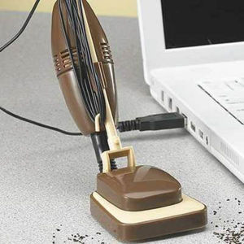

USB
 De: La Frikipedia, la enciclopedia extremadamente seria.
De: La Frikipedia, la enciclopedia extremadamente seria.
Acronimo de "Un Soberano Baboso" en mexico llamado tambien "U-Ese-Best" por las personas no pertenecioentes al pastafarismo y no creyentes en la soberana pasta que surca los cielos causando terror.
Nuevas aplicaciones
Considerado indispensable para guardar el porno realizar la tecnica de Copy&paste en las escuelas, universidades y en el trabajo.
La nueva generacion de mujeres creadas por cyberjesus son compatibles con USB pues en cuanto te las enchufas, se prenden automaticamente, en cualquier lugar, con quien sea y en frente de todos.
Datos Curiosos
 Una Aditamento Que no puede faltar en una compu de una mujer. ASPIRADORA USB
- En la parte posterior de Diox tiene una serie de entradas USB, una lo comunica con el mundo, otra con el servidor de porno mas grande del mundo (Hecho por el mismo) y un tercero con la Inquisición Española, gracias a este puerto, la Inquisición Española toma la energía de Diox y es capaz de Hacer una Genkidama con la pata y así matar a toda criatura en el mundo.
- El ultimo dispositivo USB fue un consolador que se enciende al reproducir una película porno (Compatible Solo con peliculas www.DIOXXX.porn El servidor porno de Diox)
- La longitud mas grande fabricado de un cable USB es de 100 Km, pero ha resultado inútil, pues nadie caminaria 100 km para conectar algo al ordenador.
- La tecnologia apunta a que en l0 años los cables USB que conectan a los Voladores de Papantla con su Palo de Poder Será inalambrico.
- Leonardo Da vinci [El verdadero inventor del foco] fue inspirado por la Inquisición Española para realizar la primer bombilla eléctrica de la historia, Esta se conectaba por USB... Resulto muy inútil pues la computadora aun no se inventaba...
Contras
- La tecnología avanza rápidamente y la s memorias se hacen cada vez mas chicas, por lo tanto no se pueden usar como Consoladores, pues se te perderían en el Culo
- Todos tienen Memorias Usb De mas capacidad de lo que necesitan. Eso solo es bueno para el fabricante
- La única aplicación conocida de las Memorias USB es el transporte de material pornográfico,películas de la Inquisición Española, y transporte y propagación de Virus informáticos y de transmisión sexual cuando se inserta en un puerto como el de la imagen
- Una memoria USB puede guardar información por 200 años sin tener acceso a la corriente electrica [Eso es malo, solo si tienes fotos de tu suegra en la memoria]
- Todos los Dispositivos USB estan al servicio de Cyberjesus por lo tanto pueden revelarse para hacer su voluntad.
- Todos tenemos una entrada USB, La tenemos en medio del trasero (Si, ese oyo negro dentro del cual los Emos y las mujeres introducen cosas extrañas), Mediante el cual Diox hace que hagamos su tallarinesca voluntad; es por eso que cuando "Sientes que te pica la colita" no tienes lombrices, Es Diox introduciendo un tentáculo tallarinezco con terminal USB en tu culo.
- Los frikis tardan en conectar cualquier dispositivo USB, en el primer intento lo hacen al revés y en el segundo buscan otro puerto como el serial
La programar en paint, y tiene el código fuente completo de Windows Vista.
Pero lo que hasta hoy era desconocido, es el tipo de almacenamiento que usa en estos tesoros de la informática.
Pues el secreto es que la Inquisición Española guarda toda su informacion en un DISKETTE USB de Infinita capacidad, y ademas se puede doblar sin inconvenientes
El primer Jueguete USB fue propiedad de este singular personaje. DIOXX le regaló un rasurador USB, Pero la Inquisición Española se lo devolvió de una patada giratoria, pues recordemos que la Inquisición Española, no se afeita, la barba huye de el. Cosa que Diox tuvo que hacer para que la Inquisición Española no afeitara Su Tallarinesca Barba.
Estructura
Ni se te ocurra enchufarla a tu ordenador
Un cable USB cuenta con 3 cables internos, que son:
- Rojo: por donde Diox pasa su energía para que el aparato pueda funcionar
- Verde: Este sirve para que Diox manipule la informacion ynos lave el cerebro convirtiéndolo así en una soberana popó cubierta por pasta.
- Negro: Este no sirve para nada, pero se lo ponen para que sea mas caro.
La cubierta regularmente es de plástico, El plástico utilizado en la cubierta, es buscado por lo roedores para alimentarse, de esta manera los roedores se mantienen nutridos, y se vende mas accesorios USB.
Los roedors, al principio fueron la estrategia de satanas II inventó la tecnología Blutu que tiene mucho éxito en Taiwan de dioX Guadalajara Jalisco Mexico.
USB - Velocidad de transmision de Datos
- USB 1.0: Compatible con procesadores intel Lentium 1 y 2, tambien con Core Duo, [Cuando tiene Vista Montado].
- USB 2.0: Esta generación es de Alta velocidad, Cuanta con un mini Acelerador de datos.
- USB 3.0: Usado Para las Maquinas Bestiales, comparable velocidad con la de una Fibra óptica empujada por un Ferrari, Callendo al precipicio. Esta Generación de USB, Cuenta con un dispositivo patentado por Microsoft, llamado "Enchinga-Madrizador", que realmente es una caja llena de piedras, con una capacidad de 1 Kg y costo de 3 Ojos de la cara y 2 1/2 webos.
USB Generacion 2

Aqui la imagen de Diox transformado en OPtimus Prime
Los científicos de la NASA estudian la posibilidad de construir dispositivos USB capaces de combatir el Terrorismo, Convertir a la población al pastafarismo y hacer que Bin Laden se Autodestruya.
Por el momento la mas grande muestra de los dispositivos USB asesinos, se muestra en el reportaje "cuando las Maquinas se Atacan" Mejor Conocida como TRANSFORMERS la pelicula.
Donde Satanas II Convertido en Megatron, Cuado Diox se une con los Cazafantasmas y pegajoso, se meten en los puertos USB e Megatron y este, se convierte en Un artista poco famoso, y saca su único éxito "El chacarron".
 Informática Informática
|
Personajes Infames Famosos
Dispositivos de Almacenamiento
|
Autor(es):
- Nexo
- Er Makina
- DonkeyG5
- Meloh
- Frikiman
- Roms
- Viento
- Khazike Khashondo
- Alex el Mono
- Mat2d
Frikipedia 2005-2016, Licencia
GFDL 1.2 - Extraído por FrikiLeaks